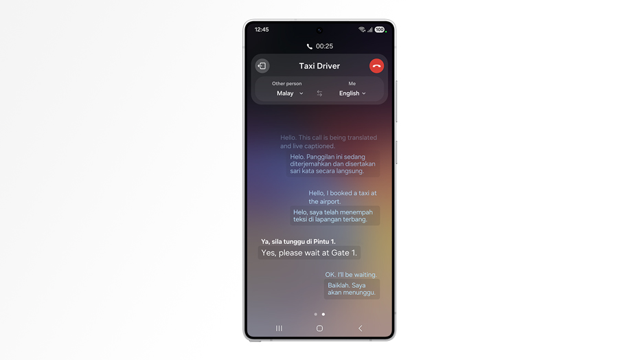
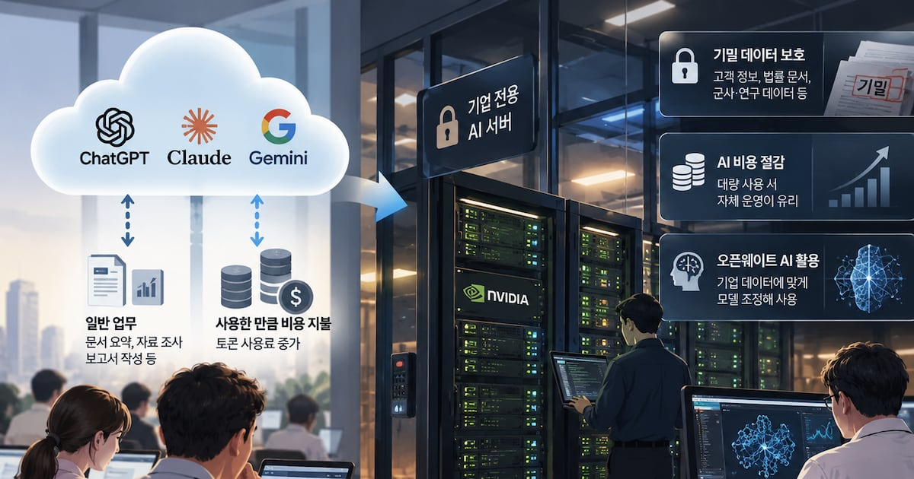
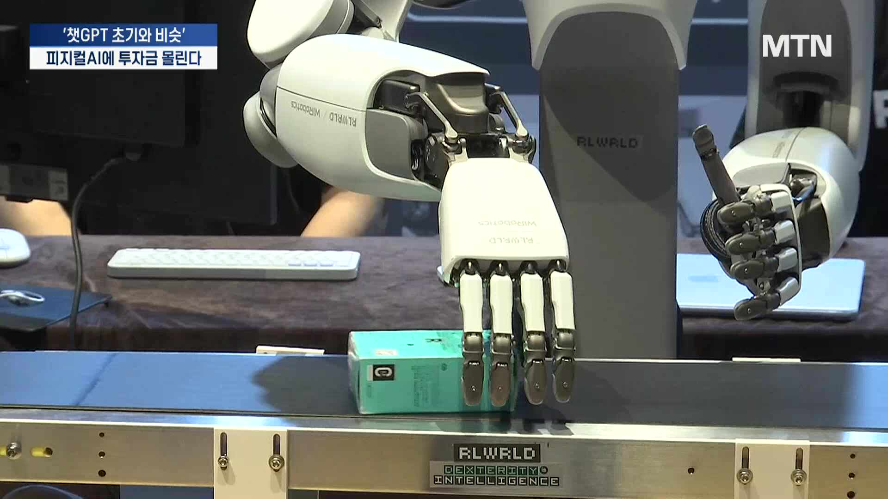
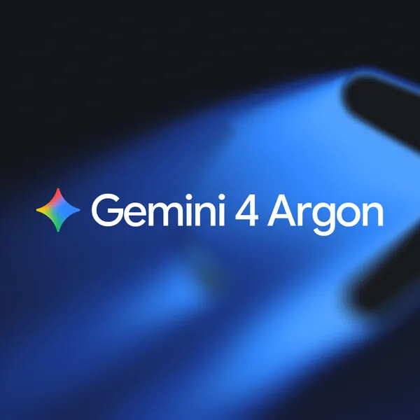

01 · KR
Samsung Galaxy AI
언어 확장으로 디바이스 에이전트의 진입 장벽을 낮추다
빅스비에 폴란드어·태국어·베트남어를 추가해 총 12개 언어를 지원한다. 신규 빅스비 언어는 10월 14일부터 제공된다.
원문 보기 ↗ADDIT INSIGHT
AI 대중화는 모델 설명보다 사용자의 언어와 맥락을 넓히는 일이다.
모델 공개·보안 점검·자체 인프라·피지컬 AI가 한 흐름으로 이어집니다.
모델·보안·인프라·로봇이 AI의 다음 실행면을 엽니다.
프런티어 모델은 제한 공개에서 앱·API·기업용으로 이동한다.
모델 경쟁은 성능·비용·컨텍스트·업무 특화로 세분화된다.
AI 보안은 발견량보다 반복 점검과 검증 루프가 중요해진다.
기업은 보안·비용·주권을 이유로 자체 AI 인프라를 키운다.
AI는 화면을 넘어 로봇·공장·물리 세계로 확장된다.

언어 확장으로 디바이스 에이전트의 진입 장벽을 낮추다
빅스비에 폴란드어·태국어·베트남어를 추가해 총 12개 언어를 지원한다. 신규 빅스비 언어는 10월 14일부터 제공된다.
원문 보기 ↗AI 대중화는 모델 설명보다 사용자의 언어와 맥락을 넓히는 일이다.

보안·비용·주권을 운영 아키텍처로 끌어오다
기업들이 외부 클라우드 대신 엔비디아 GPU 기반 자체 AI 서버와 데이터센터를 구축하는 추세라는 보도다.
원문 보기 ↗모델 선택과 함께 데이터 위치·비용 상한·운영 주체를 정한다.

AI 자금이 화면 밖의 실행면으로 이동하다
챗GPT가 촉발한 AI 투자 열풍이 로봇 산업으로 확산하고 있으며, 로보스트래티지가 비상장 로봇 기업 17곳에 투자했다는 보도다.
원문 보기 ↗화면 경험과 함께 센서·안전·현장 데이터·협업을 설계한다.

오픈소스 보안을 반복 점검 서비스로 바꾸다
참여 프로젝트에 강력한 모델의 정기 보안 스캔을 무료 제공한다. 결과는 사람의 검토 없이 모델이 생성된다고 명시했다.
원문 보기 ↗발견 건수보다 검토·우선순위화·수정 완료까지 연결한다.

앱·코딩·API·기업용으로 공개면을 넓히다
Gemini 앱과 macOS용 Google Antigravity의 에이전틱 코딩 인터페이스에서 이용할 수 있으며, Tasks 모드와 40개 이상의 앱 연동을 지원한다.
원문 보기 ↗모델 공개는 권한·앱 연동·백그라운드 실행 조건까지 설계하는 일이다.